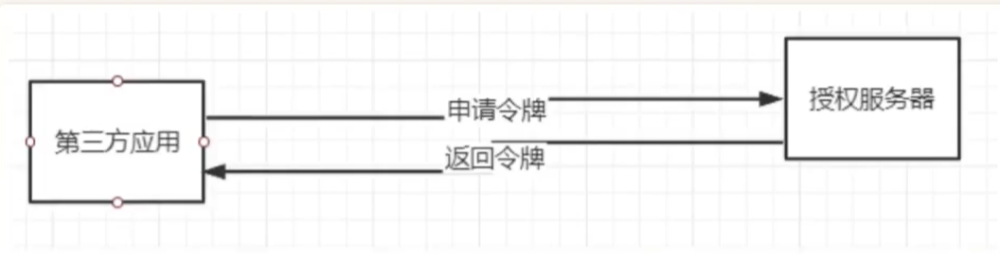

1.1模式的介绍——模式的不同，信任也不同。在梳理OAuth2.0协议流程的过程中，其实有一个主线，就是三方参与者之家的信任程度。[1] 授权码模式用户、第三方、授权服务器 三方都互相不相任。[2] 简化模式授权服务器对第三方相任，授权服务器当用户授权后，直接给服务器令牌，而不是授权码。[3] 密码模式用户对第三方比较信任，直接给于密码给第三方获取令牌。[4] 客户端模式三方互信，要就直接给我，在同一系统下使用。JWT